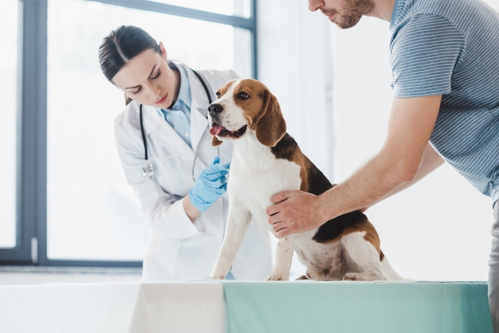
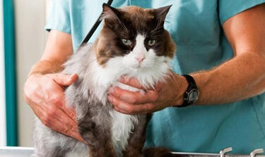
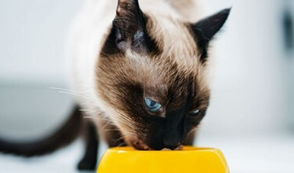
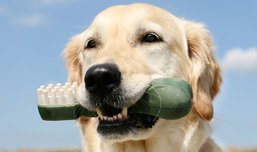

fluffy store
Because Your Best Friend Deserves the Best Care
.png)

How we work
We know the future of veterinary medicine is in good hands because we see it being powered by the care, capability and connection our Associates provide at their local hospitals every day.
 |
||
Trust |
Being Real |
Curiosity |
| Great patient care is built on trust, at every level of our organization.s | At VCA, careers thrive in a community of encouragement, without ego, attitude or agenda. | Our love of learning pushes our industry, communities, and hospitals forward. |
Read moreWe provide a comfortable and unique experience for all pets through a skilled team of doctors and specialists at the highest level. Our sole endeavor is the comfort of your pet |
Read morewe think thats all the marketing we need — our customers understand that were in this to help them provide the best for their pets and that we truly value the relationship weve built with them. |
Read more“We offer a personal shopping experience thats immediately felt upon entering our store,” he said. “We get to know our customers and their pets and they become like family.” |
|  | our story Founded in 1987, VCA is a family of hometown animal hospitals committed to making a positive impact for pets, people, and our communities. We care about the communities we serve and every pet within them, not just those we see in our hospitals. Every hospital carries a sense of pride for the legacy of excellence they’ve built and the stories of service that are deeply connected to their local communities. VCA joined the Mars family in 2017. Together, we are writing a powerful story about what’s next in veterinary care. |
Read moreWith more than 55 years of service to pet parents, fluffy is a category-defining health and wellness company focused on improving the lives of pets, pet parents and our own fluffy partners. The company has committed to providing accessible, affordable and convenient veterinary care via its rapidly growing network of more than 100 full-service in-store vet hospitals. In September 2020, the company launches Vital Care, a groundbreaking paid wellness plan providing pet parents with a convenient, affordable way to meet pets routine wellness needs. In October,fluffy announces it has stopped selling specific electronic “shock” collars, strengthening the companys commitment to positive reinforcement training methods. |
|

25 doctors
854 Clients
13 awards
26 wins in competitions
Our Amazing Works
|  | VaccinationsYoung animals are like children; it a never-ending job keeping them safe and happy. Vaccinations are the best weapon. |
NutritionA nutrition-rich diet is your pet first line of defense. Proper daily nutrition is an important factor for keeping your pet healthy. |
 |
|  | Dental CareRegular dental care is essential for keeping your pet healthy and happy. Dental disease is a common issue among household pets. |
 "We followed the only vet I've ever trusted to her new clinic. Kathy Chappell You get all paws up from #willow_wolfhound and her crew of 9 puppies. Still can't believe they slept thru their checkup today. Dr. Chappell and I met, when my grandkitty Vignar was very sick, everyone else advised my daughter to put him down, not Kathy.She encouraged her to keep trying if she could. Well 2 Years later Vignar is a happy healthy robust kitty" - Dawn |
"So grateful that the best Vet in town, Dr. Kathy Chappell, is currently at Currents . Because of we've been newly introduced to this clinic. Not only is it closer to us where we live but the staff are super friendly, facility is clean, service is great, pricing is reasonable and I totally love the “Pet Desk” phone app they use to help with tracking our pets vaccinations (and so on)." - Shawna |
"Dr. Jackson and his staff are extremely nice and knowledgeable. They had everything they need it to make a rapid and accurate diagnosis of my puppy. They explained everything I needed to know about my puppy's condition and made sure I understood the what, when, why and how of the medicine they were sending me home with. I'm so glad I have found this clinic they really do go above and beyond for their patients." - Rasel |